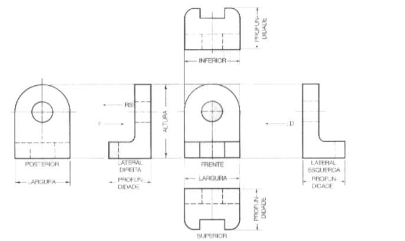
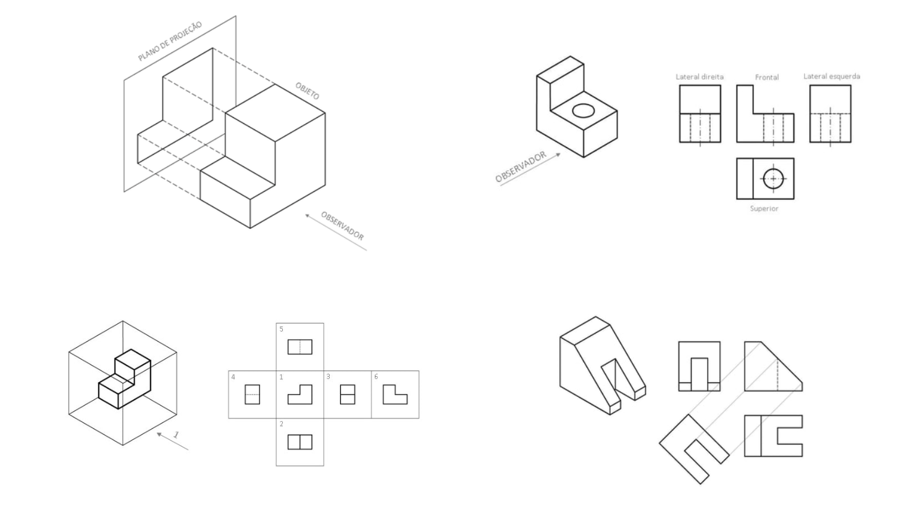
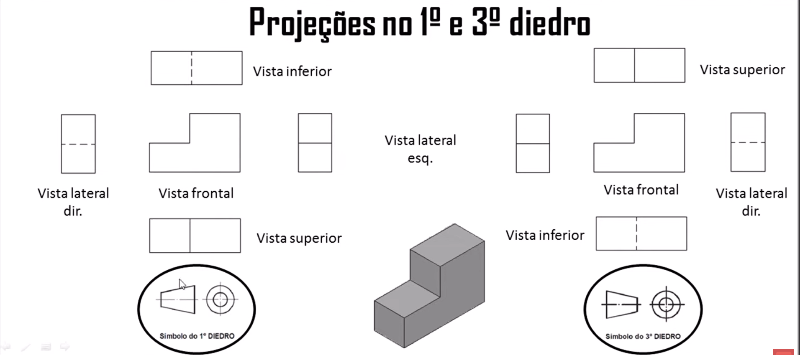
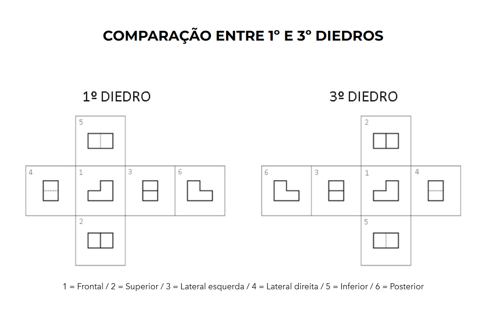
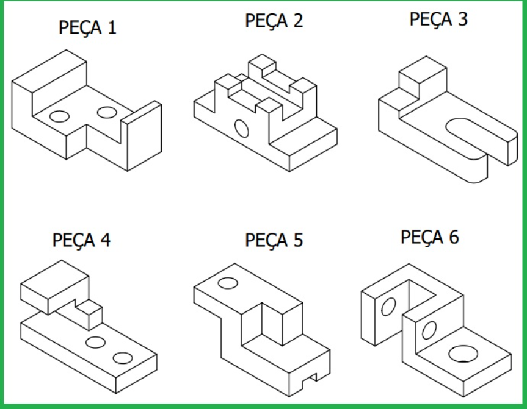

O que é essa tal de Projeção?
No SENAI, você vai descobrir que ninguém desenha uma peça "bonitinha" em 3D para a oficina. Nós usamos o Desenho Projetivo. É como se a gente "esmagasse" a peça contra a parede para ver apenas um lado de cada vez.

Fig 1.1 - Exemplo de vistas e cotas normalizadas.O segredo está nas Linhas: Linhas grossas são o que a gente vê, linhas tracejadas são o que está escondido, e as linhas finas com números são as Cotas (as medidas). Se errar a cota, a peça vira sucata!
O Jogo das Vistas (O "Tombo" da Peça)
Imagine que a peça é um dado e você só pode tirar **uma foto de cada lado**, completamente reta. No SENAI, a gente usa a **"Regra do Tombo"** (1º Diedro), onde o desenho principal é a Frontal.

Fig 1.2 - Projeção Ortográfica: Frontal, Superior e Lateral Esquerda.
✅ Frontal (Elevação): A "foto de frente", que mostra mais detalhes.
🚁 Superior (Planta): A "foto de drone", olhando de cima pra baixo.
👈 Lateral Esquerda (Perfil): A "foto do lado", que no desenho fica à direita.
⚠️ "Professor, por que a Lateral Esquerda fica na direita?" — Relaxa, é a norma. Você projeta a luz e desenha a sombra!
1º Diedro vs 3º Diedro (Comparação Direta)
Confira abaixo os dois padrões. Note que no Brasil (1º Diedro), o desenho do "copinho" (cone) mostra o círculo primeiro!

Regra: A peça fica entre você e o papel. É o que o seu professor vai te cobrar no SENAI.

Regra: O papel (plano de projeção) fica entre você e a peça.
📺 Vídeos: Passo a Passo
Assista antes de começar a rabiscar!
✏️ Prancheta Digital: Bora Praticar
Tente reproduzir o desenho abaixo no quadro ao lado!

Desafio: Tente esboçar as vistas principais.
Limpar Prancheta?
Isso vai apagar todo o seu desenho técnico. Não tem "Ctrl+Z" depois!